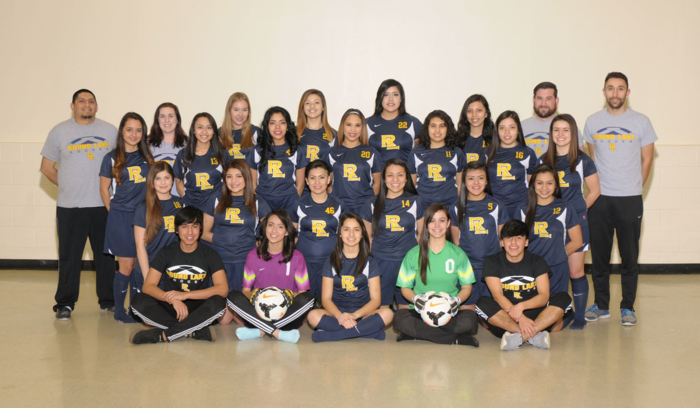

Round Lake girls soccer team is composed of girls who are in the 9th-12th grade. There are 4 soccer teams that you can possibly be apart of: varisty, junior varsity, junior varsity 2, and the freshman team. We have four coaches and each of them are in charge of a team. The coach for the varsity team is Jimenez. The coach for the junior varsity team is Hugo tellez. For junior varsity 2 is David Tellez. And for the freshman its coach Rico. Try-outs typcally start in Janurary and last for 3 days. The coaches look for speed, strength, and perserverance.
The mission of the Round Lake Girl's soccer team is to provide age and skill appropriate instruction to all soccer players through a tiered curriculum that addresses a variety of learning styles presented by highly qualified trainers to advance both their technical and tactical skills. RLHS girl soccer will help players develop a passion for soccer while cultivating positive relationships between players, trainers, and the greater soccer community.